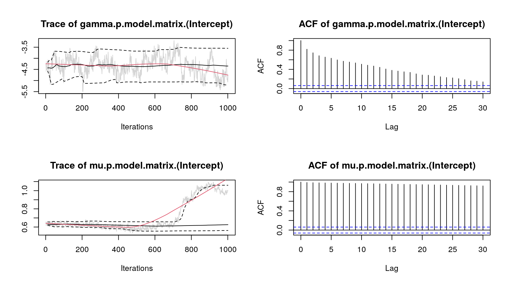
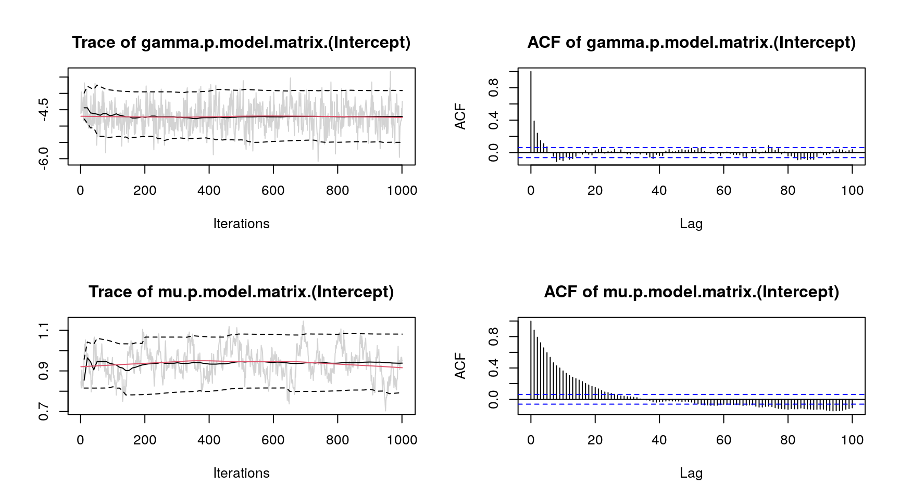

Bayesian Joint Models for Longitudinal and Survival Data
jm.RmdIntro
The articles Flexible Bayesian Additive Joint Models with an Application to Type 1 Diabetes Research (Köhler et al. 2017) and Nonlinear Association Structures in Flexible Bayesian Additive Joint Models (Köhler, Umlauf, and Greven 2018) present a flexible framework for estimating joint models for longitudinal and survival data using MCMC. This vignette provides some example code how to set up joint models using bamlss.
This vignette explains how to estimate joint models with the following hazard rate model: \[
h_{i}(t) = \exp\left[\eta_{i}(t)\right] =
\exp [\eta_{\lambda i}(t) + \eta_{\gamma i} + \eta_{\alpha i}(\eta_{\mu i}(t), t) ]
\] The longitudinal response \(y_{ij}\) at time points \(t_{ij}\) is modeled as \[
y_{ij}=\eta_{\mu i}(t_{ij}) + \varepsilon_{ij}
\]
with independent normal errors \(\varepsilon_{ij} \sim N(0, \exp[\eta_{\sigma_i}(t_{ij})]^2)\).
In this model the predictors \(\eta_k = \left( \eta^{\lambda}, \eta^{\gamma}, \eta^{\alpha}, \eta^{\mu}, \eta^{\sigma} \right)\) are a composition of \[ \eta_k=\eta_k\left(\mathbf{x}; \boldsymbol{\beta}_k\right) = f_k(\mathbf{x}) = f_{1k}(\mathbf{x}_{1k})+\ldots+f_{J_kk}(\mathbf{x}_{J_kk}), \] where functions \(f_{jk}( \cdot )\), \(j = 1, \ldots, J_k\) are unspecified functions of generic covariates \(\mathbf{x}\), e.g., that are modeled by splines. There are two types of parameters in this model, time-varying (\(\lambda\), \(\alpha\) and \(\mu\)) and time-constant (\(\gamma\) and \(\sigma\)) parameters. Note that parameter \(\lambda\) includes the baseline hazard effect.
For more details on model specifications and methodology see Köhler et al. (2017) and Köhler, Umlauf, and Greven (2018).
Mayo Clinic Primary Biliary Cirrhosis Data
This example is taken from the JMbayes package (Rizopoulos 2016). The serum bilirubin level is one of the most important body markers associated with the PBC liver disease. Here, we try to investigate how the mean bilirubin level influences survival. Therefore, we decompose the time-varying effect in parameter \(\mu\) into a main effect and a functional random intercept, to account for individual deviations.
The data can be loaded with
## id years status drug age sex year ascites hepatomegaly
## 1 1 1.09517 dead D-penicil 58.76684 female 0.0000000 Yes Yes
## 2 1 1.09517 dead D-penicil 58.76684 female 0.5256817 Yes Yes
## 3 2 14.15234 alive D-penicil 56.44782 female 0.0000000 No Yes
## 4 2 14.15234 alive D-penicil 56.44782 female 0.4983025 No Yes
## 5 2 14.15234 alive D-penicil 56.44782 female 0.9993429 No Yes
## 6 2 14.15234 alive D-penicil 56.44782 female 2.1027270 No Yes
## spiders edema serBilir serChol albumin alkaline SGOT
## 1 Yes edema despite diuretics 14.5 261 2.60 1718 138.0
## 2 Yes edema despite diuretics 21.3 NA 2.94 1612 6.2
## 3 Yes No edema 1.1 302 4.14 7395 113.5
## 4 Yes No edema 0.8 NA 3.60 2107 139.5
## 5 Yes No edema 1.0 NA 3.55 1711 144.2
## 6 Yes No edema 1.9 NA 3.92 1365 144.2
## platelets prothrombin histologic status2
## 1 190 12.2 4 1
## 2 183 11.2 4 1
## 3 221 10.6 3 0
## 4 188 11.0 3 0
## 5 161 11.6 3 0
## 6 122 10.6 3 0and contains several potentially relevant covariates explaining the disease. Note that for the survival part, the time variable is years and for the longitudinal part year in this data set. To set up the joint model we need to specify formulas for each parameter (\(\lambda\), \(\gamma\), \(\mu\), \(\sigma\), \(\alpha\)) of the model.
## Set up the model formula including
## functional random intercepts using ti().
f <- list(
Surv2(years, status2, obs = log(serBilir)) ~ s(years,k=20),
gamma ~ s(age,k=20) + drug + sex,
mu ~ ti(id,bs="re") +
ti(year,k=20) +
ti(id,year,bs=c("re","cr"),k=c(nlevels(pbc2$id),8)),
sigma ~ 1,
alpha ~ s(years,k=20),
dalpha ~ -1
)The model is estimated by first running a backfitting algorithm, to find appropriate starting values, afterwards the MCMC sampler is started.
## Set the seed for reproducibility.
set.seed(123)
## Estimate model.
b <- bamlss(f, data = pbc2, family = "jm",
timevar = "year", idvar = "id")The model summary gives
##
## Call:
## bamlss(formula = f, family = "jm", data = pbc2, timevar = "year",
## idvar = "id")
## ---
## Family: jm
## Link function: lambda = log, gamma = log, mu = identity, sigma = log, alpha = identity, dalpha = identity
## *---
## Formula lambda:
## ---
## Surv2(years, status2, obs = log(serBilir)) ~ s(years, k = 20)
## -
## Smooth terms:
## Mean 2.5% 50% 97.5% parameters
## s(years).tau21 5.060e+00 2.095e-04 2.770e-01 4.387e+01 0.000
## s(years).edf 2.395e+00 1.001e+00 1.769e+00 6.330e+00 0.103
## s(years).alpha 8.921e-01 2.108e-01 9.867e-01 1.000e+00 NA
## ---
## Formula gamma:
## ---
## gamma ~ s(age, k = 20) + drug + sex
## -
## Parametric coefficients:
## Mean 2.5% 50% 97.5% parameters
## (Intercept) -4.33809 -5.19152 -4.34750 -3.54898 -2.134
## drugD-penicil -0.13823 -0.49208 -0.13589 0.19728 -0.081
## sexfemale -0.03222 -0.54328 -0.03723 0.48846 -0.568
## -
## Acceptance probability:
## Mean 2.5% 50% 97.5%
## alpha 0.8499 0.0771 0.9707 1
## -
## Smooth terms:
## Mean 2.5% 50% 97.5% parameters
## s(age).tau21 0.6067465 0.0001197 0.0147995 8.8790071 0.000
## s(age).edf 1.5123370 1.0006645 1.1297232 4.9789590 0.608
## s(age).alpha 0.9179284 0.2268342 0.9931830 1.0000000 NA
## ---
## Formula mu:
## ---
## mu ~ ti(id, bs = "re") + ti(year, k = 20) + ti(id, year, bs = c("re",
## "cr"), k = c(nlevels(pbc2$id), 8))
## -
## Parametric coefficients:
## Mean 2.5% 50% 97.5% parameters
## (Intercept) 0.7109 0.5619 0.6258 1.0593 0.603
## -
## Acceptance probability:
## Mean 2.5% 50% 97.5%
## alpha 0.9978 0.9850 1.0000 1
## -
## Smooth terms:
## Mean 2.5% 50% 97.5% parameters
## ti(id).tau21 4.027e-01 7.969e-02 7.969e-02 1.376e+00 0.000
## ti(id).edf -2.253e+01 -2.670e+01 -2.265e+01 -1.382e+01 0.000
## ti(id).alpha 6.804e-02 6.040e-24 1.482e-05 1.000e+00 NA
## ti(year).tau21 1.246e-04 2.762e-05 9.255e-05 4.187e-04 0.000
## ti(year).edf -7.169e-01 -1.356e+00 -6.795e-01 -2.440e-01 0.041
## ti(year).alpha 9.863e-01 8.844e-01 9.996e-01 1.000e+00 NA
## ti(id,year).tau21 1.821e+02 3.785e+01 2.160e+02 2.910e+02 0.000
## ti(id,year).tau22 9.708e-05 3.451e-05 7.889e-05 2.038e-04 0.000
## ti(id,year).edf -2.121e+01 -3.244e+01 -2.400e+01 -8.790e+00 0.000
## ti(id,year).alpha 2.698e-01 1.115e-18 3.000e-02 1.000e+00 NA
## ---
## Formula sigma:
## ---
## sigma ~ 1
## -
## Parametric coefficients:
## Mean 2.5% 50% 97.5% parameters
## (Intercept) -0.3689 -0.4954 -0.3296 -0.2375 0.104
## -
## Acceptance probability:
## Mean 2.5% 50% 97.5%
## alpha 6.962e-01 2.570e-143 9.920e-01 1
## ---
## Formula alpha:
## ---
## alpha ~ s(years, k = 20)
## -
## Parametric coefficients:
## Mean 2.5% 50% 97.5% parameters
## (Intercept) 1.661 1.116 1.666 2.139 0
## -
## Acceptance probability:
## Mean 2.5% 50% 97.5%
## alpha 0.9473 0.4908 0.9972 1
## -
## Smooth terms:
## Mean 2.5% 50% 97.5% parameters
## s(years).tau21 1.095e+01 3.477e-02 4.575e+00 5.909e+01 0.708
## s(years).edf 4.686e+00 1.510e+00 4.536e+00 7.718e+00 0.000
## s(years).alpha 6.828e-01 1.393e-10 8.595e-01 1.000e+00 NA
## ---
## Formula dalpha:
## ---
## dalpha ~ -1
## ---
## Sampler summary:
## -
## DIC = 5081.882 logLik = -2298.779 logPost = 4514.064
## pd = 484.3245 runtime = 10075.83
## ---
## Optimizer summary:
## -
## logLik = -3460.477 logPost = -33648.29 time = 174.306Here, the estimated parameters from the backfitting step are quite different from the posterior mean calculated from the MCMC samples. This might indicate that the default number of iterations, n.iter = 1200, is not enough to obtain convergence of the MCMC chains. To check this issue we look at some traceplots.
 For convenience, we only show the traceplots of the intercept for parameter \(\gamma\) and \(\mu\). The traceplot for parameter \(\mu\) clearly shows an upwards trend of the MCMC chain. To overcome this issue, we estimate the model again and increase the burnin-in phase and the thinning parameter.
set.seed(321)
## Run model
m <- bamlss(f, data = pbc2, family = "jm",
timevar = "year", idvar = "id", optimizer = FALSE,
jm.start = coef(b), n.iter = 12000, burnin = 2000, thin = 10)Note, executing the code will take some time because of the large number of parameters for the functional random intercept terms (\(> 2500\)). Another solution to speed up estimation is to use multiple cores for sampling. This can be done using the bamlss() wrapper by setting, e.g., cores = 4. Then, internally the mclapply() function of the parallel (R Core Team 2019) package is called. Now, the samples from model m look much better.
 However, there is still some autocorrelation for parameter \(\mu\), which could be further reduced by, e.g., increasing the thinning parameter.
The estimated effects can be plotted instantly, e.g., for the time-varying parameters \(\lambda\) and \(\alpha\):
 The left plot is the estimated baseline hazard effect, the right plot the estimated association parameter. Both effects seem to be quite linear, however, according the 95% credible intervals the effect for parameter
The left plot is the estimated baseline hazard effect, the right plot the estimated association parameter. Both effects seem to be quite linear, however, according the 95% credible intervals the effect for parameter alpha is not significant.
The age effect for the time-constant parameter \(\gamma\) of the risk model is plotted with:
 Again, the effect of age on the logarithmic risk scale is basically linear and increasing. The estimated effects for the bodymarker model in the \(\mu\) parameter are plotted in similar fashion:
Again, the effect of age on the logarithmic risk scale is basically linear and increasing. The estimated effects for the bodymarker model in the \(\mu\) parameter are plotted in similar fashion:
 The left plot shows the estimated random effect for each individual, the middle plot the estimated functional random intercepts and the right plot the corresponding main effect of
The left plot shows the estimated random effect for each individual, the middle plot the estimated functional random intercepts and the right plot the corresponding main effect of year, which is linearly increasing.
Another feature that is implemented is the plot of estimated survival probabilities for single individuals.
 The upper plot shows the predicted survival probability up to 14 years of individual 21. The lower plot is the predicted effect of time in the longitudinal model \(\mu\). Here, the dots represent the observed bilirubin level of this individual.
The upper plot shows the predicted survival probability up to 14 years of individual 21. The lower plot is the predicted effect of time in the longitudinal model \(\mu\). Here, the dots represent the observed bilirubin level of this individual.
References
Köhler, Meike, Nikolaus Umlauf, Andreas Beyerlein, Christiane Winkler, Anette-Gabriele Ziegler, and Sonja Greven. 2017. “Flexible Bayesian Additive Joint Models with an Application to Type 1 Diabetes Research.” Biometrical Journal 59 (6): 1144–65. https://doi.org/10.1002/bimj.201600224.
Köhler, Meike, Nikolaus Umlauf, and Sonja Greven. 2018. “Nonlinear Association Structures in Flexible Bayesian Additive Joint Models.” Statistics in Medicine 37 (30): 4771–88. https://doi.org/10.1002/sim.7967.
R Core Team. 2019. R: A Language and Environment for Statistical Computing. Vienna, Austria: R Foundation for Statistical Computing. https://www.R-project.org/.
Rizopoulos, Dimitris. 2016. “The R Package JMbayes for Fitting Joint Models for Longitudinal and Time-to-Event Data Using Mcmc.” Journal of Statistical Software 72 (7): 1–45. https://doi.org/10.18637/jss.v072.i07.
Umlauf, Nikolaus, Nadja Klein, Achim Zeileis, and Thorsten Simon. 2021. bamlss: Bayesian Additive Models for Location Scale and Shape (and Beyond). https://CRAN.R-project.org/package=bamlss.